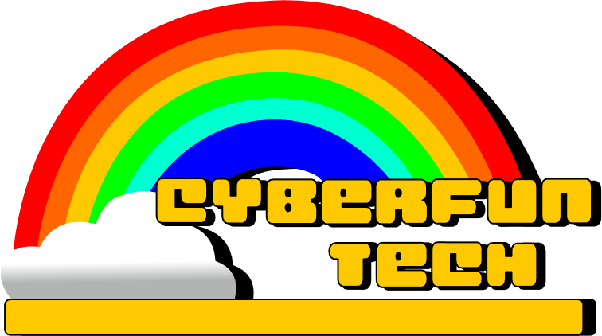

Cyberfun Tech was a company founded in 1943 by Jason Pooltrick. Then it got later inherited by his son Norman pooltrick, after he passed on March 19th, 1952. later Jack and Felix pitched their resteraunt idea, Bon's Burgers, to the company! and were able to make another company, Bunny Smiles Incorporated.
